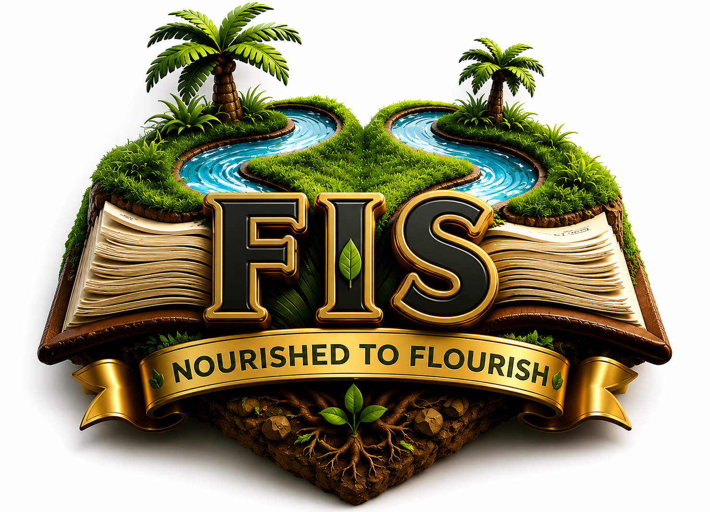

Nourished to Flourish
Empowering every learner through quality education, innovation, leadership, and character development.
Welcome to Fatfield International Schools where excellence meets opportunity. We believe every child possesses unique talents waiting to be nurtured. Our commitment is to provide quality education that inspires confidence, creativity, discipline, and lifelong learning. Through dedicated teachers, modern technology, and a safe learning environment, we prepare students not only for examinations but for life.
To nurture healthy minds with self - identity into enlightened individuals in a caring, creative and secured learning enviroment.
To be a world class school knownn for quality, resourcefulness and innovative education through structured and guided engagements...
I am Alive.
Alert.
Awake.
Enthusiastic.
creative.
God-Breed.
God-Predestined.
God-Called.
God-Justified.
and God-Glorified.
Technology-driven classrooms preparing students for the digital world.
Dedicated professionals committed to nurturing academic excellence.
Building character through sports, arts, leadership, and entrepreneurship.
A caring and secure environment where every child thrives.
fatfield international schools is providing quality childcare to families with shool-aged children from creche, to Elementary. The definition of high quality can be different for each child as well as for each potential client looking for quality for thier children to be nutured and supported in such a way thaty promotes confidence, positive self-esteem andprovides the opportunity for optional growth in all area of development. Some special feature are:
Tech- enabled teach/learn methodology: the use of apps and devices to explore learning experience and teaching methodologies is a premium advantage to prepare all stake-holders (learners, parents,staff,clients) for global competence.
Child-Centered Learning Through Developmental progress Reports which will be completed on each child weekly and termly. Teachers will observe and record children's developmental progress in the classroom, and then have a time to sit and talk with parents. All engagements are structured and channeled toward making our children balance in all areas.
Top-notch Afterschool service: With many of our clients being professionals, bueiness owners and self-employed, this features will ease the minds of many parents who may get caught in any emergency, meetings and traffic at a fee on daily, weekly, monthly or termly basis as desired.
Occasional workshops and Time out for parents:Most oftern parents don't have time to stop and play with thier children oa drop off or pick up time. Workshops will allow parents (old & new) to explore and see the facility at the same time promote our program to potential families.
Entrepreneurial Intership: Our learners will be exposed to periodic internships to prepare them for real life experiences, mentorship and career inspiration. Atthe same time, our learners will have opportunity to parctices what they have been taught, eg, enterpreneurship, leadership, vocational, skills, charcter building and communication/human relations skills, etc, which serves as a tool to promote and enhance self-confidence.
OUR CLASSES:Creche(3 month - 1year), Pre-school 1 & 2(1-3 years) Nursery 1 & 2 (3 - 4 years) Reception (5years) and Year 1- 3(6 - 8 years)
OUR CURRICULUM: WE run a blend of british (EYFS/ Key Stages 1 ), Montessori(Practical science method), Stem/Robotics (Scienctific meothod), ACE(Value/Charcter building), AISTEER and Nigerian (Globalization Readiness)
OUR EXPECTATION: At the end of each academic year, our learners should be literate, globally aware,empathical, active citizens, people-oriented, confident,critical thinkes, creatively curious,flexible,spiritually sound, act with integrity and have a
OUR AFTERSCHOOL: We create a home away from home to make our learners relax after the day's work. Refreshment, homework assistance and fun is served to take care of our learners while thier parents work with ease.
OUR HOME LINK: We value our parent and will love to partner with them to support every child. We welcome constructive feedback and concerns.
OUR OFFICIAL TIME: Academics is from MONDAYS- FRIDAYS, 7:00am - 2pm.
Nurtured to flourish
Begin your child's journey toward excellence today.
Apply for Admission